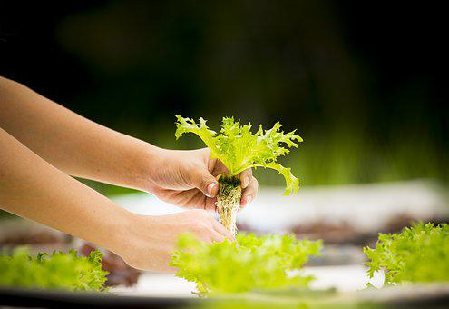

Accessibility to top-quality, safe food is the essential need for any general public and furthermore, the food needs to meet the extra support expected for child food sources, baby food varieties, dietetic food, and food made for pregnant women. The nature of food is arriving at new aspects and it is relied upon to get improved to a lot more upper level later on. Along these lines, food should be seen comprehensively from biogenesis of the fixings to wholesome physiology to plan and develop the treatment methodology and food handling strategies appropriately. People who study Food Technology in Germany are acquainted with food innovation or food-handling designing that joins fundamental information on innate sciences with food-explicit examinations.
Accessibility to top-quality, safe food is the essential need for any general public and furthermore, the food needs to meet the extra support expected for child food sources, baby food varieties, dietetic food, and food made for pregnant women. The nature of food is arriving at new aspects and it is relied upon to get improved to a lot more upper level later on. Along these lines, food should be seen comprehensively from biogenesis of the fixings to wholesome physiology to plan and develop the treatment methodology and food handling strategies appropriately. People who study Food Technology in Germany are acquainted with food innovation or food-handling designing that joins fundamental information on innate sciences with food-explicit examinations.
Food Technology courses in Germany include the expansion of the engineering, food science, and biological subjects complemented by seminars, elective and optional subjects like food process engineering, biotechnology, molecular science, process mechanization, sensor engineering, hygiene innovation, purging and sanitization, environmental engineering, dairy and milk innovation, oil and fat innovation, fermentation innovation, and packing engineering, and so on. Thus, the people who try to concentrate on Food Technology in Germany can hope to acquire complete information in different fields.